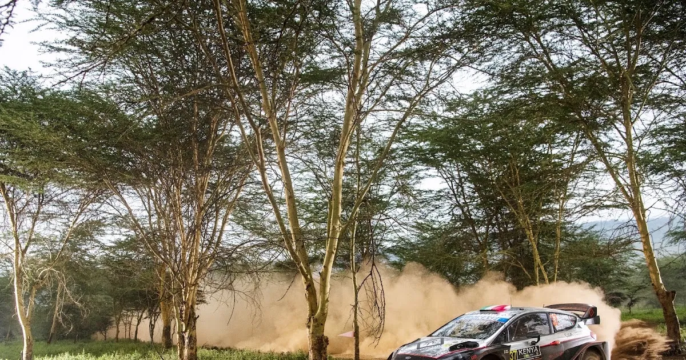
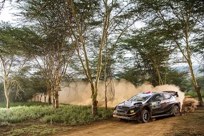
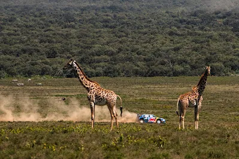
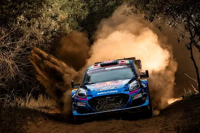
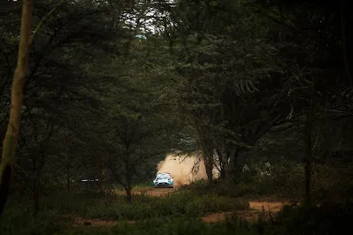
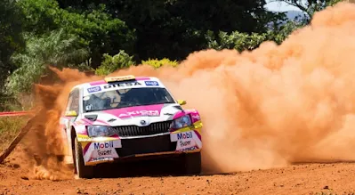

Safari Rally Kenya - An Unfolding Disaster
The WRC flies to Africa for the third round of the 2024 season, for the famous Safari Rally in Kenya. This time next week, we will be waiting to see who will come out of Hell's Gate victorious, and what effect that will have on the championship's standings.
Unfortunately, behind the scenes, "Hell's Gate" would be a fitting description of what's been happening behind the scenes leading up to the event.

Kenyan journalist Saddique Shaban has been shedding light on what the situation is like in Kenya, with the Safari Rally suffering from corruption allegations and mismanagement, that led to the event being massively behind schedule, with the Kenyan event still not 100% ready to host the rally, with the rally's start being just 3 days away!
The 2nd Rally Guide for the event was exceptionally late, arriving only on the 4th of March, which is less than a month from when the Safari Rally is due to take place, and even before that, when the Supplementary Regulations for the rally were released back in January, everyone was shocked to see that the itinerary was identical to last year's version of Safari!
Some changes have since been made, with two stages being altered slightly, namely Sleeping Warrior and Kedong, but the itinerary remains virtually the same. But why is that, and what has been going on behind the scenes?

In February, Phineas Kimathi, CEO of the Safari, was fired. Revelations about corruption and misspending followed, with Kimathi being alleged to have exceeded his budget for the previous editions of the Safari rally by tens of millions of Kenyan Shillings. He is also alleged of mismanaging the FIA Rally Star programme, with his son McRae Kimathi allegedly getting preferential treatment.
It's worth mentioning that the rally had to launch a new website, and updated the rally's emails just over two weeks ago, with some suspecting that had something to do with the previous board.
As we were getting closer to the event's date, more details emerged about the situation. Kenyan journalist Saddique Shaban reported last week, that the event is massively behind schedule, and that the event has not paid the Promoter for the event, as well as fees relating to the logistics, hospitality, service park and vendors were unpaid. Many of the personnel working with the organizers have also gone unpaid. Shaban went as far as reporting that champagne and trophies for the podium weren't purchased yet.

This week, it was also reported that some suppliers and vendors that had worked with the event in the past three editions of the rally, and were due to be working with the organisers on the 2024 edition also, were refusing to work for the organisers due to missed payments or because they were owed money from previous versions of the rally.
But the troubles don't stop there, as there's more worrying information about the event. The Safari Rally missed the deadline for marking the route for the rally (advertisement boards, yellow, red boards etc), with the organisers, who claimed that the boards could be damaged by animals, hoping to be up before Monday, when recce starts.

The latest from Naivasha is that the rally's Event Director, Jim Kahumbura, resigned, with his resignation being approved by the FIA.
The construction of the service park is still ongoing also, with the organisers hoping to have ended works by tomorrow, which is the deadline for it to be finished.
All this chaos, certainly doesn't bode well for the event's future. Despite Safari having secured an extension until the 2026 WRC season, the Kenyan event could see itself dropping out of the calendar for 2025, especially if they don't honor the contract they've signed with the WRC Promotor.
And that's especially bad timing for the Safari Rally, as many countries are on the waiting list, hoping to secure a slot in the WRC calendar. Paraguay especially has been named as an event that could replace Safari for 2025.
